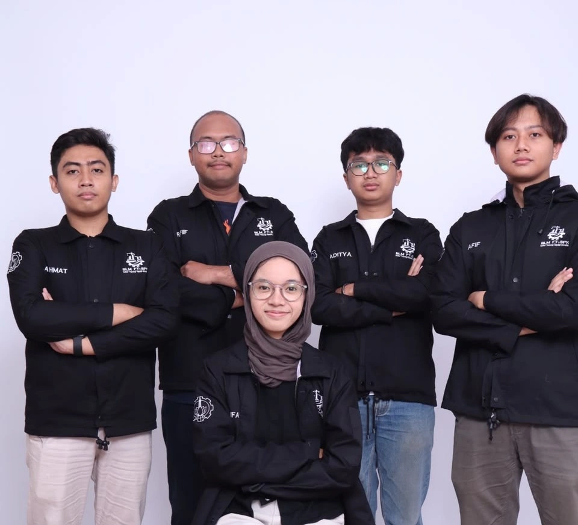

About Me & Experience
SAYAI AM ABDULLAH RACHMAT SUGI
GEOMATICS ENGINEERGEOMATICS ENGINEER
Saya adalah Fresh Graduate Teknik Geomatika ITS dengan fokus pada perpaduan antara akuisisi data lapangan presisi dan teknologi visualisasi modern. Ketertarikan ini memotivasi saya mendalami pengembangan WebGIS dan pemodelan 3D tingkat lanjut, yang diwujudkan melalui penelitian tugas akhir mengenai rekonstruksi 3D interaktif Candi Tikus menggunakan integrasi fotogrametri UAV dan metode Gaussian Splatting. I am a fresh graduate in Geomatics Engineering from ITS, focusing on the intersection of precise field data acquisition and modern visualization technologies. This interest motivated me to delve into WebGIS development and advanced 3D modeling, realized through my thesis on the interactive 3D reconstruction of Candi Tikus using integrated UAV photogrammetry and Gaussian Splatting.
Bagi saya, Geomatika bukan sekadar tentang mengukur bumi, melainkan bagaimana mengolah data mentah menjadi solusi tata ruang yang akurat, informatif, dan berpusat pada kenyamanan pengguna akhir. For me, Geomatics is not just about measuring the earth, but transforming raw data into spatial solutions that are accurate, informative, and user-centric.
Keterampilan TeknisTechnical Skills
 QGIS
QGIS
 Google Earth Pro
Google Earth Pro
 DJI Terra
DJI Terra
 Blender
Blender
 Autodesk Civil 3D
Autodesk Map 3D
Autodesk Civil 3D
Autodesk Map 3D
 Python (Basic)
Python (Basic)
 R
R
 HTML/CSS/JS
HTML/CSS/JS
 CesiumJS
CesiumJS
 Leaflet.js
Leaflet.js
 GitHub
GitHub
 Vercel Deployment
Vercel Deployment
PendidikanEducation
Institut Teknologi Sepuluh Nopember (ITS)Sepuluh Nopember Institute of Technology (ITS)
Sarjana Teknik Geomatika (IPK: 3.41/4.00)B.Eng. in Geomatics Engineering (GPA: 3.41/4.00)
Tugas Akhir:Final Thesis: "Pemodelan 3D Candi Tikus Menggunakan Integrasi Data Fotogrametri UAV dan Terestrial Berbasis Metode Gaussian Splatting""3D Modeling of Candi Tikus Using Integrated UAV and Terrestrial Photogrammetry Data Based on the Gaussian Splatting Method"
SMA Negeri 1 Bangsal
MIPA (Nilai Rata-Rata: 90.23/100)Science Major (Average Score: 90.23/100)
Pengalaman MagangInternship Experience
Pengukuran dan Pemetaan Aset TanahLand Asset Surveying and Mapping
- Melakukan pengukuran terestris aset tanah PT KAI menggunakan GNSS RTK EFIX kurang lebih 30 bidang tanah di kawasan Stasiun Jombang dan Jl. Anggrek Madiun guna verifikasi batas kepemilikan fisik di lapangan.Conducted terrestrial boundary surveys for PT KAI land assets on approximately 30 parcels in the Jombang Station area and Jl. Anggrek Madiun using EFIX GNSS RTK for field boundary verification.
- Mengolah data survei dan digitasi spasial menggunakan AutoCAD Civil 3D dan ArcGIS Pro untuk memetakan batas aset, integrasi data lintasan, serta analisis luasan koridor jalur operasional dan non-operasional.Processed survey data and spatial digitization using AutoCAD Civil 3D and ArcGIS Pro to delineate asset boundaries, integrate administrative data, and analyze corridor areas for operational and non-operational lines.
- Menyusun 6 peta tematik dan 1 peta hasil pengukuran mencakup sebaran stasiun, batas aset tanah, dan lintas jalur Daop 7 Madiun.Developed 6 thematic maps and 1 survey layout depicting station distributions, land asset boundaries, and railway corridors across Daop 7 Madiun.


Pengolahan dan Pembaruan Peta KadastralCadastral Map Processing and Updates
- Mengolah dan memperbarui peta kadastral menggunakan AutoCAD dan ArcGIS untuk pemeliharaan data pendaftaran tanah di wilayah Kota Kediri.Processed and updated cadastral maps using AutoCAD and ArcGIS to support land registration data maintenance across Kediri City.
- Melaksanakan pengukuran terestris batas bidang tanah menggunakan GNSS pada kawasan perumahan dan bangunan di Kota Kediri untuk verifikasi fisik di lapangan.Conducted terrestrial field boundary surveys using GNSS for residential housing areas and built structures in Kediri City for on-site boundary verification.
- Mencocokkan data spasial bidang tanah dengan buku sertifikat tanah/SHM bangunan guna memastikan kesesuaian antara batas fisik dan dokumen kepemilikan.Cross-checked spatial parcel data against land certificates (SHM) to ensure consistency between physical boundaries and legal ownership documents.


Pengecekan Topologi, Pengukuran, dan Verifikasi SHMTopology Validation, Surveying, and SHM Verification
- Melakukan pengecekan dan perbaikan topologi pada sekitar 115 bidang tanah untuk memastikan konsistensi dan akurasi data spasial.Performed topological validation and data cleaning on 115 land parcels to eliminate gaps and overlaps, ensuring spatial accuracy and database consistency.
- Melaksanakan pengukuran lapangan menggunakan peralatan GNSS pada 10 bidang perkebunan di Desa Sumberbrantas, Kecamatan Bumiaji.Conducted field boundary surveys using geodetic GNSS equipment across 10 plantation parcels in Sumberbrantas Village, Bumiaji District.
- Memverifikasi data kepemilikan tanah melalui pencocokan Sertifikat Hak Milik (SHM) dengan basis data instansi untuk memastikan akurasi dan validitas data.Validated land ownership records by cross-referencing freehold certificates (Sertifikat Hak Milik/SHM) with the institutional cadastral database to ensure legal tenure and data integrity.


ProyekProjects
Pemodelan 3D Candi Tikus Berbasis Gaussian Splatting3D Modeling of Candi Tikus Using 3D Gaussian Splatting
- Mengintegrasikan 1.543 foto fotogrametri UAV dan terestrial menggunakan 3D Gaussian Splatting (3DGS) melalui optimasi 20.000 iterasi.Integrated 1,543 UAV and terrestrial photogrammetry images using 3D Gaussian Splatting (3DGS) across 20,000 optimization iterations.
- Menghasilkan model 3D interaktif berukuran 70% lebih kecil (1,03 GB vs 3,47 GB) dengan performa rendering 4–6x lebih cepat (92–98 fps vs 16–50 fps) dibanding SfM/MVS.Produced an interactive 3D model with a 70% smaller file size (1.03 GB vs 3.47 GB) and 4–6x faster rendering performance (92–98 fps vs 16–50 fps) compared to SfM/MVS.
- Mencapai ketelitian dimensi linier tinggi dengan nilai RMSE 1,36 cm dan deviasi Cloud-to-Cloud 0,183 m yang divalidasi pada 7 segmen pengukuran lapangan.Achieved high linear dimensional accuracy with an RMSE of 1.36 cm and a Cloud-to-Cloud deviation of 0.183 m, validated across 7 field measurement segments.


Pemetaan Terestris dan Batimetri Kawasan Suramadu, SurabayaTerrestrial and Bathymetric Mapping of the Suramadu Area, Surabaya
- Melakukan pengukuran Kerangka Kontrol Vertikal (KKV) Global pada 10 titik kontrol menggunakan waterpass dengan metode pulang-pergi double stand.Surveyed 10 Global Vertical Control Network points using a level instrument with the double-run, double-stand method.
- Mengukur dan mengolah 453 titik detail situasi dan kontur pada area kurang lebih 3 hektare berbasis 6 titik Bench Mark (BM) kontrol menggunakan Total Station hingga tahap digitasi.Surveyed and processed 453 topographic detail points across approximately 3 hectares, based on 6 Bench Mark (BM) control points, using a Total Station through the digitization stage.
- Melaksanakan pengukuran batimetri perairan dangkal dengan metode sounding colok di zona pesisir yang tidak terjangkau kapal survei untuk pemodelan elevasi dasar perairan.Conducted shallow-water bathymetric measurements using the pole sounding method in coastal areas inaccessible to survey vessels for underwater terrain elevation modeling.


Analis Penginderaan Jauh & SIG | Pemantauan Spasio-Temporal Tambak WonorejoRemote Sensing & GIS Analyst | Spatio-Temporal Monitoring of Wonorejo Tambak
- Mengolah citra multitemporal Sentinel-2A (2015, 2018, 2021, 2024) menggunakan metode Support Vector Machine (SVM) pada ENVI untuk analisis tutupan lahan.Processed multi-temporal Sentinel-2A imagery (2015, 2018, 2021, 2024) using Support Vector Machine (SVM) in ENVI for land cover change analysis.
- Menyusun accuracy assessment berbasis confusion matrix dan koefisien Kappa untuk validasi ketelitian hasil klasifikasi citra.Conducted confusion matrix-based accuracy assessment and Kappa coefficient evaluations to validate image classification precision.
- Memproduksi dan menyusun layout seri peta tematik multitemporal berstandar kartografis menggunakan ArcGIS Pro.Produced and designed standardized multi-temporal thematic map layouts using ArcGIS Pro.


Analis Data Spasial | Complete City ProjectSpatial Data Analyst | Complete City Project
- Berpartisipasi dalam program Kota Lengkap bersama BPN Surabaya II untuk pembersihan dan validasi data kadastral di Kelurahan Gading, Kecamatan Tambaksari.Participated in the Complete City program with BPN Surabaya II for cadastral data cleaning and validation in Gading Village, Tambaksari District.
- Mengidentifikasi dan menganalisis 121 anomali topologi spasial, yang terdiri dari 104 kasus overlap (tumpang tindih) dan 17 kasus gap antarpersil tanah.Identified and analyzed 121 spatial topology anomalies, comprising 104 overlap cases and 17 gap cases between land parcels.
- Melakukan koreksi geometri melalui reposisi batas bidang, eliminasi NIB ganda/anomali, serta sinkronisasi data shapefile ArcGIS dengan gambar kerja AutoCAD guna memastikan konsistensi basis data pertanahan.Executed geometric corrections through parcel boundary repositioning, elimination of duplicate/anomalous NIBs, and synchronization of ArcGIS shapefiles with AutoCAD drawings to ensure land database consistency.


Pengalaman OrganisasiOrganizational Experience
Komisi LegislasiLegislative Commission
- Berperan sebagai Komisi II dan pelaksana Musyawarah Tingkat Tinggi (MTT) FT-SPK ITS.Served as part of Commission II and contributed to the organizing committee of the FT-SPK ITS High-Level Deliberation (MTT).
- Mengelola administrasi dan seluruh proses persuratan yang berkaitan dengan pelaksanaan kegiatan organisasi.Managed administrative affairs and official correspondence to support the preparation and implementation of organizational activities.
- Berkoordinasi dengan berbagai pihak untuk mendukung kelancaran pelaksanaan kegiatan dan memastikan proses pengambilan keputusan berjalan secara tertib dan efektif.Coordinated with stakeholders to ensure the effective execution of activities and orderly decision-making processes in accordance with organizational procedures.

Komisi LegislasiLegislative Commission
- Bertanggung jawab dalam penyusunan Garis Besar Haluan Kerja (GBHK) kepengurusan HIMAGE-ITS.Developed the General Guidelines of Organizational Direction (GBHK) for the HIMAGE-ITS management period.
- Melakukan kajian, penyusunan, dan peninjauan kebijakan serta regulasi organisasi guna mendukung tata kelola organisasi yang efektif.Reviewed and formulated organizational policies and regulations to support effective governance.
- Memberikan arahan kepada anggota komisi dan mengoordinasikan fungsi legislasi dalam proses perumusan kebijakan serta pengambilan keputusan organisasi.Guided commission members and coordinated legislative functions in policy formulation and organizational decision-making.


KepanitiaanEvent Committees
Staf PerlengkapanLogistics Staff
- Mempersiapkan dan mengelola logistik serta instrumen pengukuran untuk kegiatan survei dan pemetaan.Prepared and managed logistics and measurement instruments for survey and mapping activities.
- Melakukan pengecekan kelayakan dan inventarisasi alat sebelum digunakan di lapangan guna memastikan kelancaran operasional.Checked equipment condition and maintained inventory before field use to ensure smooth operations.
Staf Keamanan dan PerizinanSecurity & Permits Staff
- Mengelola dokumen perizinan acara dan memastikan kepatuhan terhadap regulasi operasional yang berlaku.Managed event permit documents and ensured compliance with applicable operational regulations.
- Bertanggung jawab atas rekayasa keamanan dan keselamatan peserta selama acara berlangsung secara luring di Surabaya.Responsible for security planning and participant safety during the in-person event in Surabaya.
Staf Dana UsahaFundraising Staff
- Merancang dan mengeksekusi strategi penggalangan dana untuk mendukung finansial kegiatan.Designed and executed fundraising strategies to support the event's finances.
- Mengelola wirausaha dan penjualan merchandise guna mengoptimalkan pemasukan dana acara.Managed merchandise sales and small ventures to optimize event revenue.
Staf PerlengkapanLogistics Staff
- Mengelola pengadaan, mobilisasi logistik, dan tata letak untuk menunjang kebutuhan acara.Managed procurement, logistics mobilization, and layout to support event needs.
- Berkoordinasi dengan divisi lain guna menjamin kelancaran teknis pada hari pelaksanaan wisuda.Coordinated with other divisions to ensure technical smoothness on graduation day.


.webp)


 ITS 2022.webp)
 2022.webp)


.webp)


.webp)